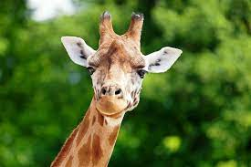
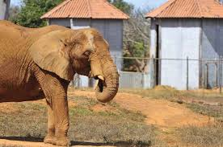

Os mamíferos constituem uma subclasse de animais vertebrados subdivididos em dois grupos: aquáticos e terrestres. Estes caracterizam-se pela presença de pelos ou cabelos e de glândulas mamárias que, nas fêmeas, produzem leite para a alimentação dos filhotes.
São animais endotérmicos, ou seja, de temperatura corpórea constante, chamados também de "animais de sangue quente", graças à sua pele, a qual é formada por duas camadas principais (epiderme e derme), onde se encontram glândulas sebáceas e sudoríparas que auxiliam a regular a temperatura.
Os mamíferos incluem 5 416 espécies (incluindo os seres humanos), distribuídas em aproximadamente 1 200 gêneros, 152 famílias e 46 ordens. Entretanto novas espécies são descobertas a cada ano, aumentando esse número e até o final de 2007 o número chegava a 5 558 espécies de mamíferos.
| Fotografia | Espécie | O que é |
|---|---|---|

|
Leão | O leão é uma espécie de mamífero carnívoro do gênero Panthera e da família Felidae. A espécie é atualmente encontrada na África subsaariana e na Ásia, com uma única população. Remanescente em perigo, no Parque Nacional da Floresta de Gir, Gujarat, Índia. Foi extinto na África do Norte e no Sudoeste Asiático em tempos históricos. |
|  | Girafa | O termo girafa é a designação dada a mamíferos artiodátilos, ruminantes, do gênero Giraffa, da família dos girafídeos, no qual constam quatro espécies (até 2016 considerava-se uma única espécie, a Giraffa camelopardalis, ou camelo-leopardo, como eram chamadas pelos romanos quando elas existiam no norte da África, pois acreditava-se que vinham de uma mistura de uma fêmea camelo, com um macho leopardo)[carece de fontes]. São ungulados com número par de dedos. |
|  | Elefante | Elefante é o termo genérico e popular pelo qual são denominados os membros da família Elephantidae, um grupo de mamíferos proboscídeos elefantídeos, de grande porte, do qual há três espécies no mundo atual, duas africanas (Loxodonta spp.) e uma asiática (Elephas spp.). |